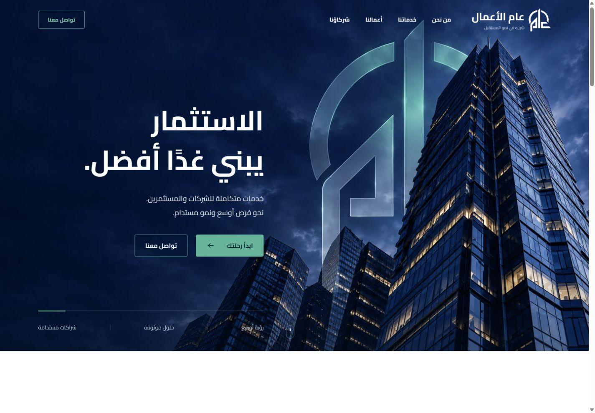
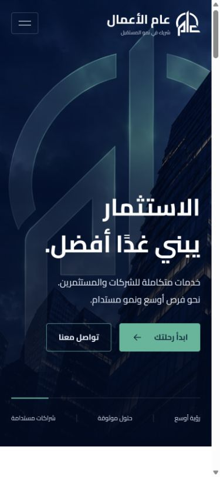
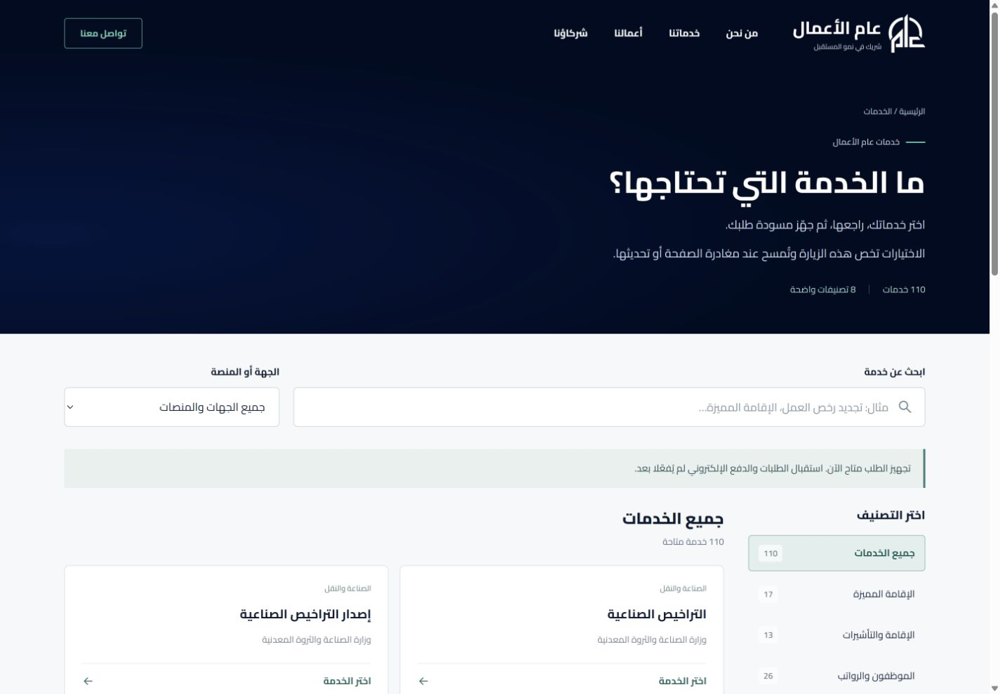

Searchable service catalogue
Search and category controls organise a broad business-service offering.
Websites
An Arabic business-services website that makes a broad service offering easier to navigate.
Dedicated service categories, company information and a searchable catalogue guide visitors from their needs to the relevant service.
HTML5 / CSS3 / JavaScript / Intersection Observer
Search and category controls organise a broad business-service offering.
Dedicated pages separate company formation, consulting and general services.
Native JavaScript and CSS power the interface and scroll reveals.


